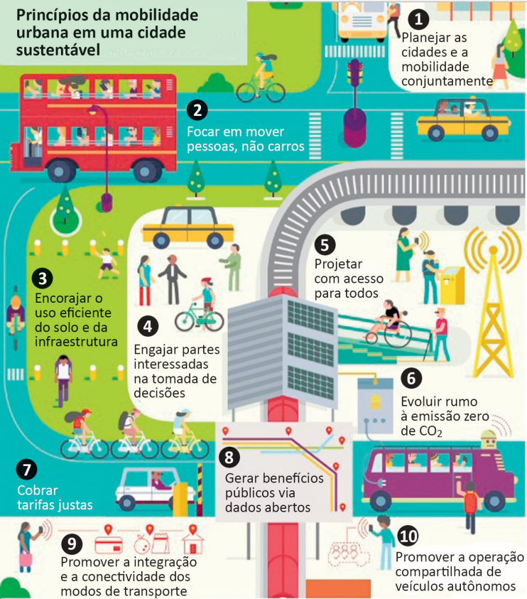

Disponível em: https://www.thinglink.com/scene/980079663516745730?buttonSource=viewLimits. Acesso em: 26 jul. 2018 (adaptado).
Considerando as informações do infográfico, avalie as afirmações a seguir.
-
No planejamento das cidades, deve-se priorizar o transporte coletivo, situação que está em
consonância com o que ocorre nas cidades mais populosas do Brasil.
-
O engajamento dos cidadãos nos debates e no planejamento das cidades é essencial para o
desenvolvimento de projetos urbanos viáveis, acessíveis e sustentáveis.
-
É necessário que o planejamento de uma cidade sustentável esteja focado na fluidez dos
veículos automotores autônomos, na diversidade de opções de mobilidade e nas modalidades
compartilhadas de transporte.
-
A utilização de painéis solares para abastecer veículos e a diminuição da emissão de gases
poluentes em uma cidade sustentável são metas ainda distantes de serem atingidas no Brasil,
devido à primazia dos meios de transportes movidos a combustíveis fósseis.
É correto apenas o que se afirma em
-
I.
-
II.
-
I e III.
-
II e IV.
-
III e IV